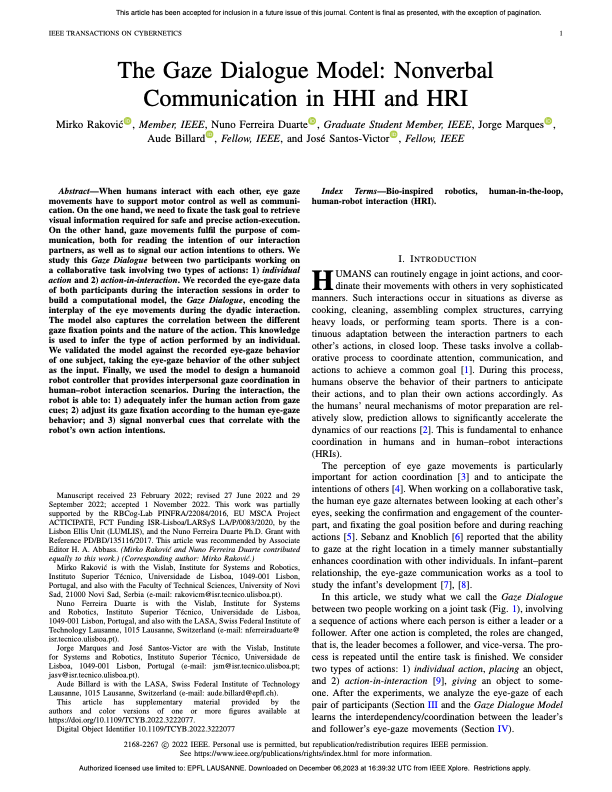

Nuno Ferreira DuarteMirko Raković (1)Jorge Marques Aude Billard (2) s José Santos-Victor (2) EPFL University of Lisboa (1) University of Novi Sad

Abstract
When humans interact with each other, eye gaze movements have to support motor control as well as communication. On the one hand, we need to fixate the task goal to retrieve visual information required for safe and precise action-execution. On the other hand, gaze movements fulfil the purpose of communication, both for reading the intention of our interaction partners, as well as to signal our action intentions to others. We study this Gaze Dialogue between two participants working on a collaborative task involving two types of actions: 1) individual action and 2) action-in-interaction . We recorded the eye-gaze data of both participants during the interaction sessions in order to build a computational model, the Gaze Dialogue , encoding the interplay of the eye movements during the dyadic interaction. The model also captures the correlation between the different gaze fixation points and the nature of the action. This knowledge is used to infer the type of action performed by an individual. We validated the model against the recorded eye-gaze behavior of one subject, taking the eye-gaze behavior of the other subject as the input. Finally, we used the model to design a humanoid robot controller that provides interpersonal gaze coordination in human–robot interaction scenarios. During the interaction, the robot is able to: 1) adequately infer the human action from gaze cues; 2) adjust its gaze fixation according to the human eye-gaze behavior; and 3) signal nonverbal cues that correlate with the robot’s own action intentions.
@ARTICLE{9965577,
author={Raković, Mirko and Duarte, Nuno Ferreira and Marques, Jorge and Billard, Aude and Santos-Victor, José},
journal={IEEE Transactions on Cybernetics},
title={The Gaze Dialogue Model: Nonverbal Communication in HHI and HRI},
year={2022},
volume={},
number={},
pages={1-0},
doi={10.1109/TCYB.2022.3222077}}